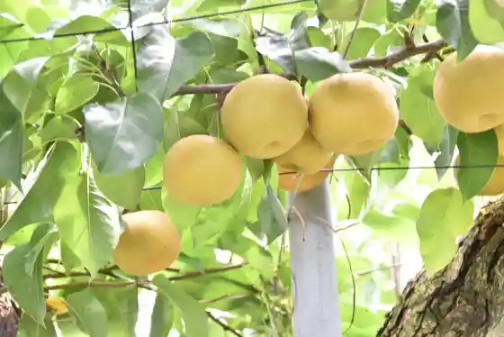
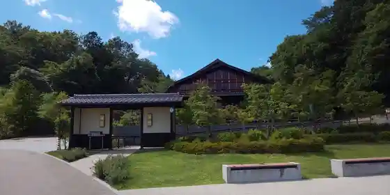
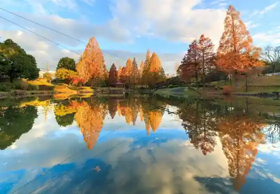
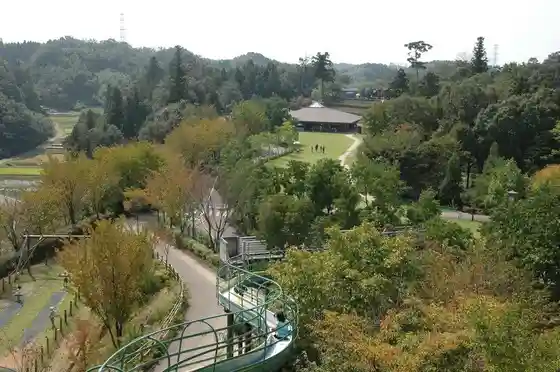

Yama Yuki Ue Nashi Kari (Yama Yuki Ue Kanko Orchard)
Minokamo, Gifu · 0574-25-4101 · Official / source link

Satoyama Baths Ashiyu
Minokamo, Gifu · 0574-23-0066 · Official / source link

Seigan Tera
Minokamo, Gifu · 0574-29-1369 · Official / source link
Maehira Park no Autumn Leaves
Minokamo, Gifu · 0574-26-6692 · Official / source link

Mi no Kamo Kenko Forest
Minokamo, Gifu · 0574-29-1108 · Official / source link

Yama no Ue no Sakura
Minokamo, Gifu · 0574-28-1110 · Official / source link
Furui Shrine Cherry Blossoms
Minokamo, Gifu · 0574-25-2111 · Official / source link
Ushimaki Chiku no Sakura Namiki
Minokamo, Gifu · 0574-25-2111 · Official / source link
Higashiyama Forest Park Shita Yoneda Sakura Forest
Minokamo, Gifu · 0574-25-2111 · Official / source link
Oyama Kannon Cherry Blossoms
Minokamo, Gifu · 0574-26-9133 · Official / source link
Monteru Minokamo Kojo
Minokamo, Gifu · 03-5784-2737 · Official / source link
Gifu Seiryu Satoyama Park
Minokamo, Gifu · 0574-23-0066 · Official / source link
Roadside Station
Minokamo, Gifu · 0574-23-0066 · Official / source link
RIVER PORT PARK Minokamo
Minokamo, Gifu · 0574-49-6155 · Official / source link
Yamazakimazakku Kosakukikai Museum
Minokamo, Gifu · 0574-28-2727 · Official / source link
Miyo Sakura Jozo (Kabu)
Minokamo, Gifu · 0574-25-3428 · Official / source link
Kyu Ota Yado Honjin Mon
Minokamo, Gifu · 0574-25-2111 · Official / source link
Mi no Kamo Tourist Information
Minokamo, Gifu · 0574-28-7717 · Official / source link
Ota Yado Nakasendo Hall
Minokamo, Gifu · 0574-23-2200 · Official / source link
Kyu Ota Wakimoto Jin Hayashiya House
Minokamo, Gifu · 0574-28-1110 · Official / source link
Yusen Tera
Minokamo, Gifu · 0574-25-2364 · Official / source link
Kyu Komatsu Ya Yoshida Ie House
Minokamo, Gifu · 0574-25-2111 · Official / source link
Ryoan Tera
Minokamo, Gifu · 0574-29-1379 · Official / source link
Zuirin Tera
Minokamo, Gifu · 0574-26-1847 · Official / source link
Furui no Tenguyama
Minokamo, Gifu · 0574-26-1331 · Official / source link
Mi no Kamo Bunka Forest
Minokamo, Gifu · 0574-28-1110 · Official / source link
Nakasendo Ota Yado
Minokamo, Gifu · Official / source link
Minokamo no Gorufu Ba
Minokamo, Gifu · Official / source link
OS Boru
Minokamo, Gifu · 0574-26-3161 · Official / source link
Satoyama Park Aozora Market
Minokamo, Gifu · 0574-27-2217 · Official / source link
Okuyama Shizen Promenade
Minokamo, Gifu · 0574-29-1001 · Official / source link
PANZA Gifu Seiryu Satoyama Park
Minokamo, Gifu · 050-5434-2629 · Official / source link
Nagaragawa Tetsudo Kanko Ressha (Nagara)
Minokamo, Gifu · Official / source link
Minokamo Service Area
Minokamo, Gifu · 0574-24-5353 · Official / source link
Ota no Watashi Ato (Kaseki Hayashi Park)
Minokamo, Gifu · 0574-25-2111 · Official / source link
Shoyo Park
Minokamo, Gifu · 0574-28-1110 · Official / source link
Kokuzo Do to Jokyu no Ran Kosenjo Ato
Minokamo, Gifu · Official / source link
Seigan Tera no Autumn Leaves
Minokamo, Gifu · 0574-29-1369 · Official / source link
Satoyama no Aki
Minokamo, Gifu · 0574-23-0066 · Official / source link
Mi no Kamo Kenko Forest no Autumn Leaves
Minokamo, Gifu · 0574-29-1108 · Official / source link
Maehira Park
Minokamo, Gifu · Official / source link
Jokyu no Ran Kosenjo Ato Oi Towatari
Minokamo, Gifu · Official / source link
Oyama Kannon (Oyama Tera)
Minokamo, Gifu · 0574-26-9133 · Official / source link
Takeda Kounsai Kahi
Minokamo, Gifu · 0574-28-1110 · Official / source link
Feafiirudo · Bai · Mariotto · Gifu Seiryu Satoyama Park
Minokamo, Gifu · Official / source link